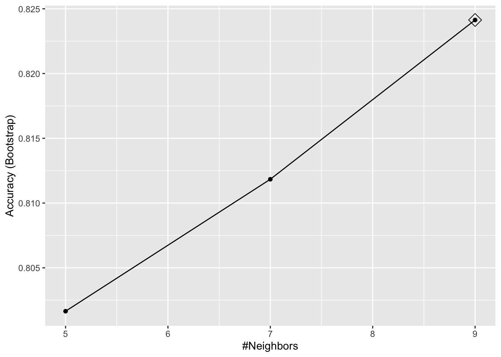
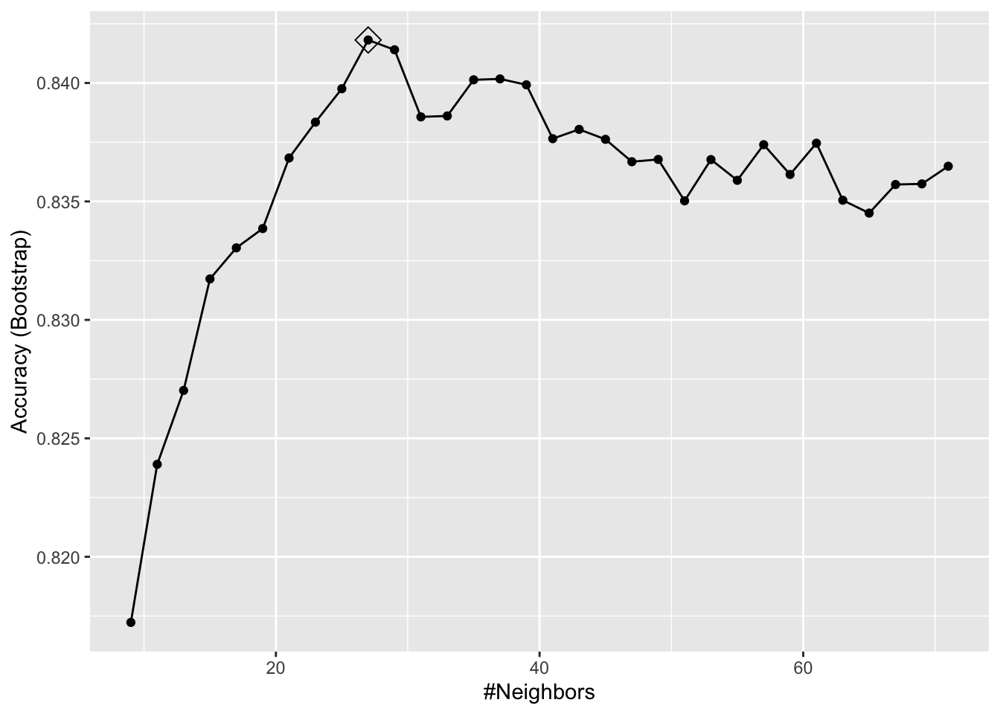
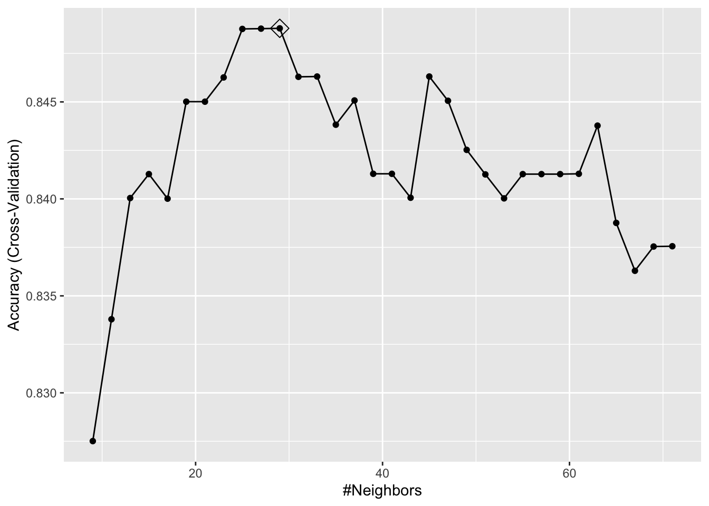

library(tidyverse)
library(dslabs)
library(caret)
train_glm <- train(y ~ ., method = "glm", data = mnist_27$train)
train_qda <- train(y ~ ., method = "qda", data = mnist_27$train)
train_knn <- train(y ~ ., method = "knn", data = mnist_27$train)35 The caret package
We have already learned about several machine learning algorithms.
Many of these algorithms are implemented in R.
However, they are distributed via different packages, developed by different authors, and often use different syntax.
The caret package tries to consolidate these differences and provide consistency.
It currently includes over 200 different methods which are summarized in the caret package manual1. Keep in mind that caret does not include the needed packages and, to implement a package through caret, you still need to install the library.
The required packages for each method are described in the package manual.
The caret package also provides a function that performs cross validation for us.
Here we provide some examples showing how we use this incredibly helpful package.
We will use the 2 or 7 example to illustrate and in later sections we use use the package to run algorithms on the larger MNIST datset.
35.1 The train functon
The caret train function lets us train different algorithms using similar syntax.
- So, for example, we can type:
To make predictions, we can use the output of this function directly without needing to look at the specifics of
predict.glmandpredict.knn.Instead, we can learn how to obtain predictions from
predict.train.
The code looks the same for both methods:
y_hat_glm <- predict(train_glm, mnist_27$test, type = "raw")
y_hat_qda <- predict(train_qda, mnist_27$test, type = "raw")
y_hat_knn <- predict(train_knn, mnist_27$test, type = "raw")This permits us to quickly compare the algorithms.
For example, we can compare the accuracy like this:
fits <- list(glm = y_hat_glm, qda = y_hat_qda, knn = y_hat_knn)
sapply(fits, function(fit) confusionMatrix(fit, mnist_27$test$y)$overall[["Accuracy"]]) glm qda knn
0.75 0.82 0.84 35.2 Cross validation
When an algorithm includes a tuning parameter,
trainautomatically uses cross validation to decide among a few default values.To find out what parameter or parameters are optimized, you can read the manual 2 or study the output of:
getModelInfo("knn")- We can also use a quick lookup like this:
modelLookup("knn")- If we run it with default values:
train_knn <- train(y ~ ., method = "knn", data = mnist_27$train)you can quickly see the results of the cross validation using the ggplot function.
- The argument
highlighthighlights the max:
ggplot(train_knn, highlight = TRUE)
By default, the cross validation is performed by taking 25 bootstrap samples comprised of 25% of the observations.
For the
kNNmethod, the default is to try \(k=5,7,9\). We change this using thetuneGridparameter.The grid of values must be supplied by a data frame with the parameter names as specified in the
modelLookupoutput.Here, we present an example where we try out 30 values between 9 and 67.
To do this with caret, we need to define a column named
k, so we use this:data.frame(k = seq(9, 67, 2)).Note that when running this code, we are fitting 30 versions of kNN to 25 bootstrapped samples.
Since we are fitting \(30 \times 25 = 750\) kNN models, running this code will take several seconds.
We set the seed because cross validation is a random procedure and we want to make sure the result here is reproducible.
set.seed(2008)
train_knn <- train(y ~ ., method = "knn",
data = mnist_27$train,
tuneGrid = data.frame(k = seq(9, 71, 2)))
ggplot(train_knn, highlight = TRUE)
- To access the parameter that maximized the accuracy, you can use this:
train_knn$bestTune k
10 27and the best performing model like this:
train_knn$finalModel27-nearest neighbor model
Training set outcome distribution:
2 7
379 421 The function
predictwill use this best performing model.Here is the accuracy of the best model when applied to the test set, which we have not used at all yet because the cross validation was done on the training set:
confusionMatrix(predict(train_knn, mnist_27$test, type = "raw"),
mnist_27$test$y)$overall["Accuracy"]Accuracy
0.835 If we want to change how we perform cross validation, we can use the
trainControlfunction.We can make the code above go a bit faster by using, for example, 10-fold cross validation.
This means we have 10 samples using 10% of the observations each.
We accomplish this using the following code:
control <- trainControl(method = "cv", number = 10, p = .9)
train_knn_cv <- train(y ~ ., method = "knn",
data = mnist_27$train,
tuneGrid = data.frame(k = seq(9, 71, 2)),
trControl = control)
ggplot(train_knn_cv, highlight = TRUE)
We notice that the accuracy estimates are more variable, which is expected since we changed the number of samples used to estimate accuracy.
Note that
resultscomponent of thetrainoutput includes several summary statistics related to the variability of the cross validation estimates:
names(train_knn$results)[1] "k" "Accuracy" "Kappa" "AccuracySD" "KappaSD" We have only covered the basics.
The caret package manual 3 includes many more details.